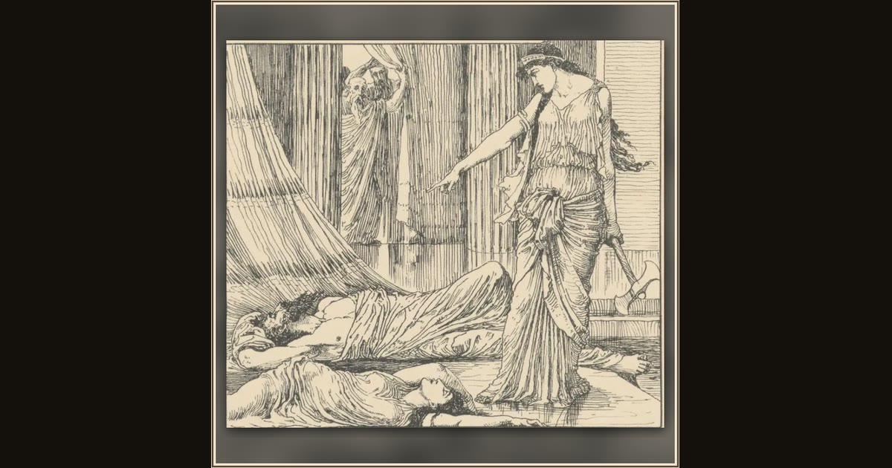

Clytaemnestra doodt Agamemnon en Cassandra (Plate from George C. Warr, Echoes of Hellas (London: Marcus Ward & Co., 1887–88))
Walter Crane (printmaker, mentioned on object); Marcus Ward & Company (publisher) · 1887 - 1888 · rijksmuseum
Clytemnestra points toward Agamemnon's body while holding an axe, with Cassandra's body in front; she declares her husband a corpse, the work of her own hand (1405). Explore its place in Aeschylus's Plays, Agamemnon, line 1378.